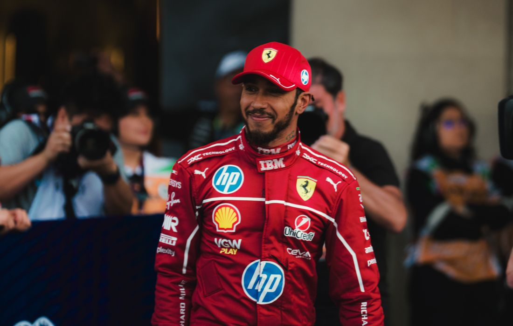
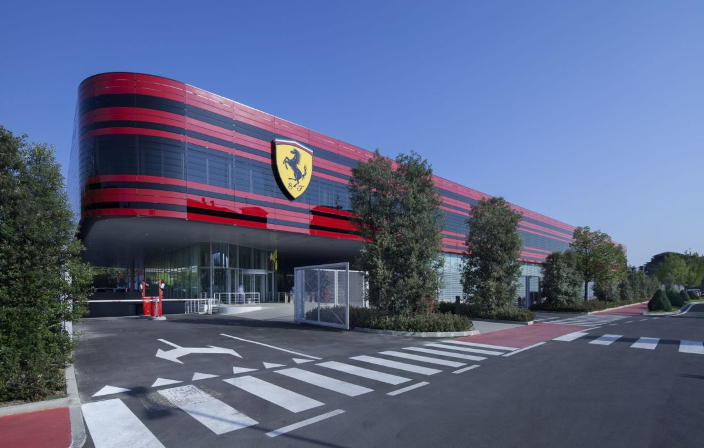
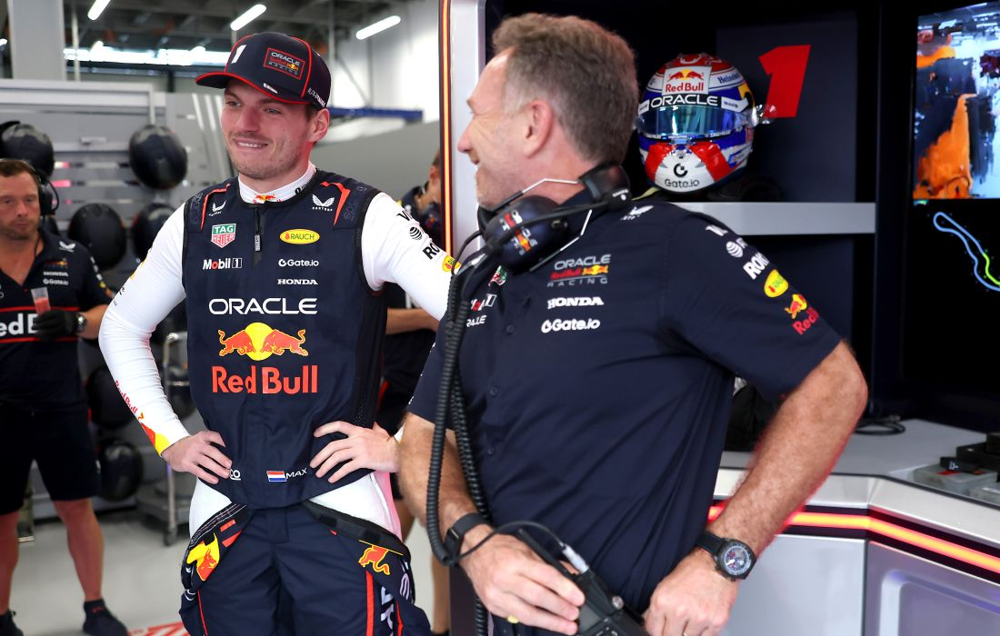

Početna
Trke
Vozači
Timovi
O nama
Osetite brzinu. Upoznajte šampione. Pratite svaku trku.
F1 HUB – sve o Formuli 1 na jednom mestu.

Luis Hamilton je izjavio da se Ferrari već nekoliko meseci
priprema za narednu sezonu

Ferari će se na testu u Barseloni
pojaviti sa prvom verzijom bolida
koja neće biti korišćena na
početku sezone?

Verstapen o odnosu sa Hornerom:
U stalnom smo kontaktu i posle
njegovog odlaska iz Red Bula